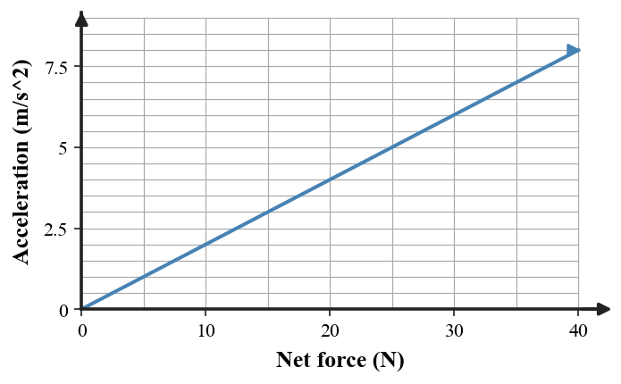
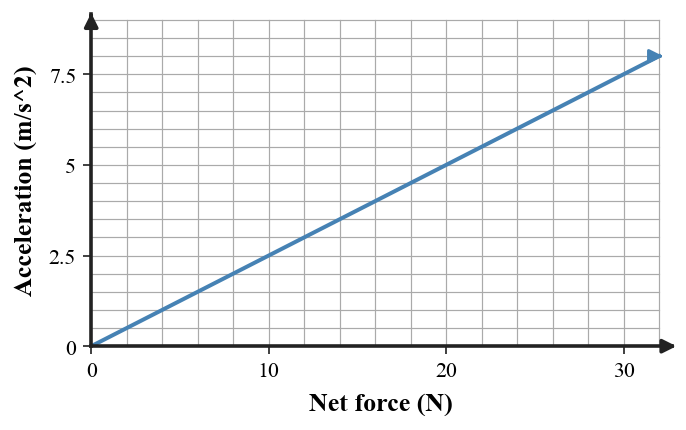

Build a complete force-and-motion model: determine net force and acceleration, connect the acceleration direction to the dot pattern, and explain what would change if the cart mass doubled while the same forces acted.
A lab group records the data below for the same cart.
| Trial | Net force | Acceleration |
|---|---|---|
| 1 | 10 N | 2 m/s² |
| 2 | 20 N | 4 m/s² |
| 3 | 30 N | 6 m/s² |
Build and defend a model relating net force and acceleration. Infer the cart’s mass, predict the acceleration at 40 N net force, and state one observation that would contradict your model.
Use the force diagram and motion evidence.
The crate’s speed is increasing to the right. Build a model that links individual forces → net force → acceleration → changing velocity. Then predict what happens to acceleration if friction rises to 70 N while applied force stays 70 N.
Construct a comparison model that includes a force statement, both accelerations, and a motion prediction for equal starting velocities over the next second. Defend why the accelerations differ even though the net forces match.
The graph is evidence from repeated trials on one cart.

Build a model from the graph: describe the relationship, estimate the cart’s mass from the trend, and predict what should happen to the graph’s slope if the cart mass is doubled. Defend your prediction.
A second cart produces this acceleration-versus-net-force graph.

Use the graph to infer the force-acceleration model and compare it to a hypothetical cart with twice the mass. State how acceleration at the same force would change and why.
Two explanations are proposed for a 6-kg cart that has 42 N right and 18 N left while moving left.
A: “It accelerates left because it is moving left.”
B: “It accelerates right because the net force is right; its leftward velocity will decrease at first.”
Choose the better model, calculate the acceleration, and explain the likely short-term change in velocity.
Evaluate whether the force report and motion evidence can both describe the same interval for a cart with nonzero mass. Identify the conflict, propose one plausible measurement/model error, and state what evidence would resolve it.